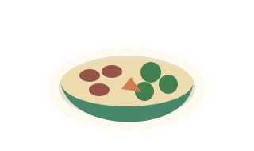
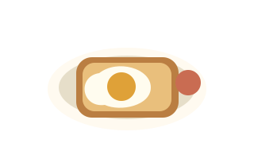
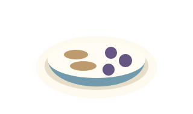
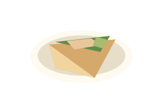
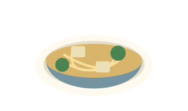
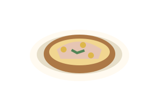

Bean & rice bowl
Ingredients: Beans, cooked rice, mixed vegetables and salsa.
Warm the beans and vegetables. Spoon them over cooked rice, then add salsa.
Easy swap
Try chickpeas instead of beans, or use a microwave rice pouch.
Cooking at home? Start with one of these six easy meals and adjust the portions to suit you.

Ingredients: Beans, cooked rice, mixed vegetables and salsa.
Warm the beans and vegetables. Spoon them over cooked rice, then add salsa.
Try chickpeas instead of beans, or use a microwave rice pouch.

Ingredients: Eggs, whole-grain bread, tomatoes and a little cooking oil.
Cook the eggs how you like them. Toast the bread and serve with the tomatoes.
Add spinach to the eggs, or use a tortilla instead of toast.

Ingredients: Plain Greek yogurt, rolled oats, berries and a spoonful of nut butter.
Stir the oats into the yogurt and top with berries and nut butter. Leave overnight in the fridge if you prefer softer oats.
Use a soy yogurt or seed butter if that suits you better. Check the label because protein amounts vary.

Ingredients: Cooked chicken, a tortilla, avocado and shredded cabbage.
Slice the cooked chicken and avocado. Add them to the tortilla with cabbage, then fold and roll.
Use leftover cooked turkey, or chickpeas for a meat-free version.

Ingredients: Firm tofu, noodles, frozen vegetables and your favourite stir-fry sauce.
Cook the noodles as directed. Pan-fry cubed tofu, add the vegetables and cook through, then toss with the noodles and sauce.
Use rice instead of noodles. Pick a sauce you enjoy and add a little at a time.

Ingredients: A potato, canned tuna, plain yogurt and sweetcorn.
Bake or microwave the potato until soft. Mix drained tuna with yogurt and sweetcorn, then spoon over the split potato.
Use mashed beans instead of tuna, or serve the filling in a sandwich.
These are meal ideas, not calculated macro totals. Your ingredients, brands and portions determine the numbers.